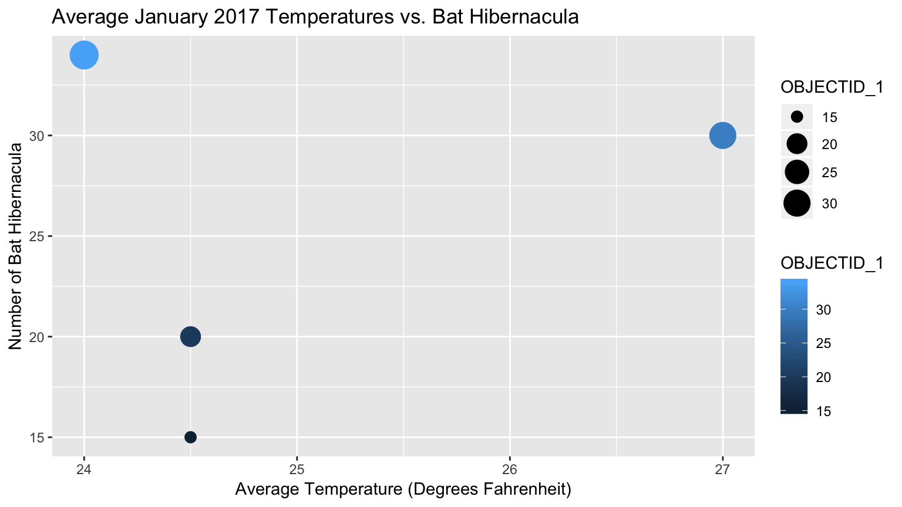

More Information
Emma Scott, Lily Schaeufele, Vivienne Maxwell
Last updated on 2018-12-21
Climate Change
Visualization 1

Explanation
The scatterplot above aims at answering the first question of whether climate change and temperature rise is causing trends of extinction and compares the average temperatures in January 2017 to the number of observed bat hibernacula (Fig. 1). The larger, bluer dots represent areas with more hibernacula. Whereas, the smaller, darker dots represent areas with less hibernacula. Though it was presumed that, along with the effects of oncoming climate change, a rise in mean winter temperature would negatively affect bat populations, the scatterplot indicates that there is no obvious correlation or causation. For example, Manchester, Indiana has both the lowest average temperature at 24°F and and the highest number of bat hibernacula at 32. On the other hand, Middlebury and New Haven, Indiana, both with an average temperature of 24.5°F, differ in population from 20 and 15 hibernacula respectively.

Figure 1. Bat hibernacula, areas where creatures seek refuge, huddling together while overwintering.
Data Description & Source
The Indiana_Bat_Towns.csv dataset was sourced from Data.Gov where it was published by the Indiana Center for Geographic Information which is a division of Agency of Commerce and Community Development for public use.1 It contains the names of towns in Indiana where hibernacula of endangered bat species have been observed. Beginning in the 1930s at the earliest, survey data has been collected in order to compile this comprehensive dataset. By means of regular underground experiments to determine the location of and the number of bats nesting in the winter months.
The accompanying EveryPlaceInIndiana.csv dataset was sourced from StatsIndiana, Indiana’s Public Data Utility and published by Information for Indiana. It contains “a list of all the named places in Indiana, including those that are not incorporated.”2 The INJan18AvgTemp.csv dataset is comprised of average high and low temperatures in January 2017 web-scraped from the National Weather Service and manually entered into a new dataset, formatted alongside the Indiana town names to be easily joined.
Geographical Distribution
Visualization 2
Explanation
Indiana Bat’s scientific name “Myotis Sodalis” give clues to the bat’s physique and lifestyle. Where “Myotis” refers broadly to the bat and specifically to its petite “mouse like ears.” The second half of its namesake “Sodalis” is directly translated from latin to mean ‘member’ or ‘companion’. It would seem this half of the name was chosen to represent the remarkable social behavior of the bat species which are documented to hibernate together in numbers up to 50,000 with 500 bats per square foot. As mentioned above the popularity of their hibernation soirees, both from most of the bat’s population congregating to one or two caves, as well as the human population disrupting those caves, puts the “Myotis Sodalis” at risk of total extinction.3
It’s common name is derived from a discovery of the bat species in southern Indiana’s Wyandotte Cave in 1904. Since the first documentation of that discovery in 1928, the Indiana Bat species has been documented throughout the midwest. The pinnacles of their range reaches Washington State in the West and Vermont in the East.
The interactive map marks all the towns where Indiana Bats have been known to live. Primarily these towns support their “summer range”. This is when the bats are roosting under the bark of dead trees. However the town of Brandon provides habitat for their summer range and hibernacula. “Hibernacula” being the winter phase where the bats seek refuge in caves for hibernation. The towns of Manchester and Dorset only support habitat for the bats Hibernacula phase.
Indiana Bats are also a threat to the “white nose syndrome”, a fungal disease first recorded in 2007. There is of yet no cure to this disease, which grows and infect the bats in hibernation while they are in close proximity in mass numbers. Despite the wide range in North America (the only continent it has been recorded to live on), if the The U.S. Fish and Wildlife Service recovery plan does not start to take effect soon, they are most likely to go extinct.
Word Count: 676
“Indiana Bat (Towns).” Data Catalog, VT Center for Geographic Information, 6 June 2018, catalog.data.gov/dataset/indiana-bat-towns.↩
“Geography Tools.” InDepth Profile: STATS Indiana, Information for Indiana, 2018, www.stats.indiana.edu/maptools/GeographyTools.asp.↩
Service, U.S. Fish and Wildlife. “Indiana Bat (Myotis Sodalis).” Official Web Page of the U S Fish and Wildlife Service, www.fws.gov/midwest/endangered/mammals/inba/inbafctsht.html.↩